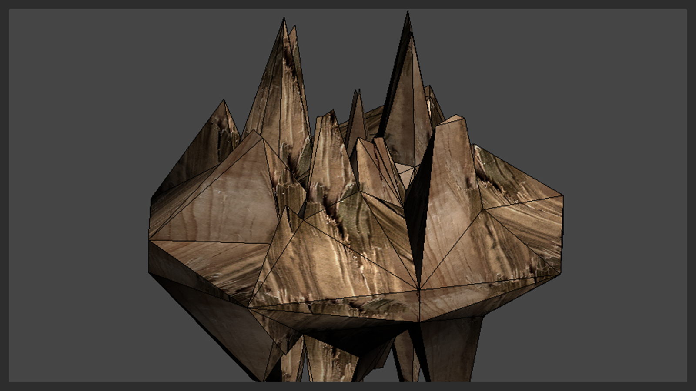

Asset Exporting Overview
Assets are quite diverse in the engine and can range from a simple texture to a complex vehicle that needs to be driven and be completely dynamic within your game. This topic is actually the longest and most in-depth section in the documentation to get you exporting assets to be correct and perfomant within your game.

Pic: Boolean Destructibles